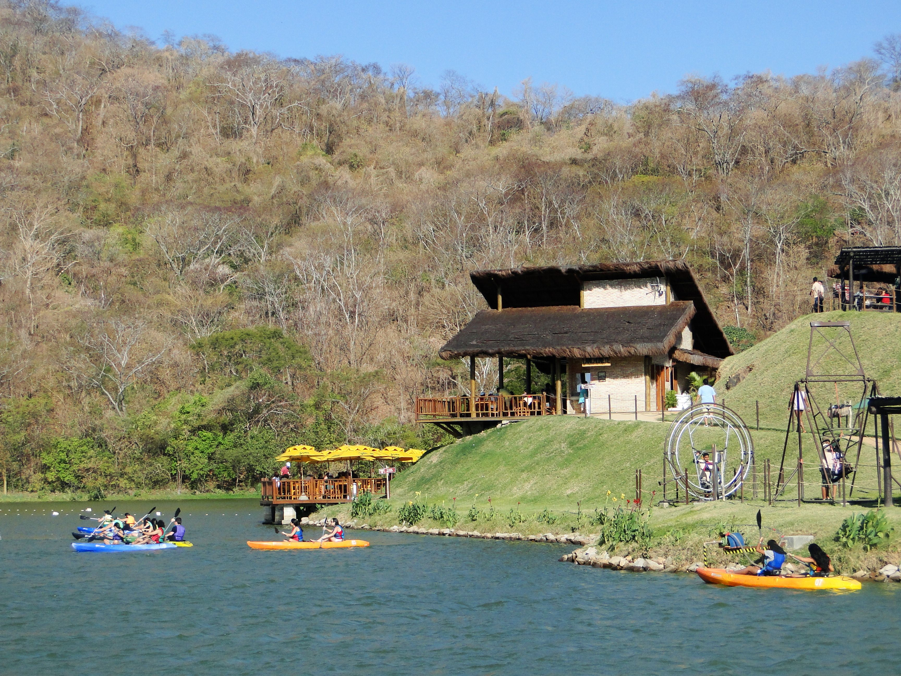

Informações técnicas sobre relevo, população, IDH etc.
| INFORMAÇÕES | |
|---|---|
| Municípios limítrofes | Norte: Caucaia e Maracanaú. Sul: Palmácia e Caridade e Guaiúba. Leste: Maracanaú e Pacatuba. Oeste: Pentecoste e Caridade. |
| Fundação | 17 de novembro de 1851 (169 anos) |
| Área total | 590,89 km² |
| Clima | Tropical quente úmido |
| IDH | 0,659 — médio |
| PIB | R$ 753 273,931 mil |
| INFORMAÇÕES TERRITORIAIS | |
|---|---|
| Número de habitantes | 128 978 habitantes |
| Superfície de Maranguape |
59 089 hectares
590,89 km² (228,14 sq mi) |
| Densidade populacional | 218,3 ha./km² |
| Altitude de Maranguape | 68 metros de altitude |
| Coordenadas geográficas decimais |
Latitude:
-3.89065
Longitude: -38.6819 |
| Coordenadas geográficas sexagesimais | Latitude: 3° 53' 26'' Sul , Longitude: 38° 40' 55'' Oeste |
| INFORMAÇÕES DO MUNICÍPIO | |
|---|---|
| Endereço da Prefeitura Municipal de Maranguape |
Maranguape
Prefeitura de Maranguape
Centro Administrativo Governador Virgílio Távora - Pça. Senador Almir Pinto, 217 MARANGUAPE - CE, 61940 Brasil Work +55 85 3369-9103 Fax +55 85 3341-0909 |
| Telefone da prefeitura |
(85) 3369-9103
Internacional: +55 85 3369-9103 |
| Fax |
(85) 3341-0909
Internacional: +55 85 3341-0909 |
| Endereço electrónicoda prefeitura |
pmmaranguape@aol.com
|
| Site oficial do município | maranguape.ce.gov.br |
| INFORMAÇÕES DO ADMINISTRATIVAS | ||
|---|---|---|
| Prefeito de Maranguape | ATILA CORDEIRO CAMARA | |
| Partido politico | SOLIDARIED | |
| INFORMAÇÕES DE TRANSPORTE | |
|---|---|
| Transporte urbano disponível | Transporte urbano público disponível |
| Aeroporto |
Aeroporto Internacional Pinto Martins
20.9 km
Aeroporto de Sobral
185.4 km
Aeroporto Dix-Sept Rosado
206.6 km
|
| INFORMAÇÕES DE DISTÂNCIA A OUTRAS CIDADES | ||
|---|---|---|
| São Paulo : 2350 km | Rio de Janeiro : 2172 km | Brasília : 1666 km |
| Salvador : 1011 km | Belo Horizonte : 1863 km | Manaus : 2373 km |
| Curitiba : 2652 km | Recife : 626 km | Goiânia : 1834 km |
| Belém : 1125 km | Porto Alegre : 3195 km | Guarulhos : 2328 km |
| Campinas : 2301 km | São Luís : 643 km | Fortaleza : 25 km mais perto |
| Distância calculada em linha reta! | ||
Conheça mais sobre a história de Maranguape.
O topônimo maranguape vem do tupi-guarani maragoab e significa Vale da Batalha. O nome é uma alusão ao lendário cacique da tribo de índios que dominava a região. Sua denominação original era Alto da Vila, depois da expansão da área e a ocupação da outra margem do rio Pirapora, a porção original da vila passou a ser chamada Outra Banda enquanto a margem oposta ia se formando enquanto centro, desde 1760, Maranguape.
As origens de Maranguape retornam aos primeiros habitantes destas terras, índios de várias etnias como os: potiguaras, pitaguaris. Os quais já cultivavam mandioca, milho e sabiam da existência de minerais na região. As terras de Maranguape receberam no ano de 1649, a visita dos holandeses durante a expedição em busca das minas de prata na serra da Taquara e serra de Maranguape. Na serra da Taquara, estes ainda ergueram uma base de apoio em cima da serra.
Com a saída dos holandeses do Ceará, o território de Maranguape vem a ser habitado pelos portugueses via sesmarias. A aglomeração às margens do riacho Pirapora e a capela de Nossa Senhora da Penha consolidam-se como núcleo urbano no século XIX, com a implementação das plantações de café.
Em 1875, Maranguape recebe um grande impulso econômico com a inauguração da linha férrea Estrada de Ferro de Baturité e a estação de trem. Esta funcionou até os anos de 1963, quando foi desativada.
Na segunda metade do século XIX, mais uma leva de portugueses iniciou mais uma atividade econômica, a plantação da cana-de-açúcar e a produção de cachaça.
Saiba mais sobre os melhores lugares e o que fazer em Maranguape.
Cascatinha Balneário & Chalés: Recebe associados e visitantes desde 1963. O complexo conta com parque aquático com piscinas e toboáguas, restaurante, chalés e pousada, cascatas, bicas, piscinas naturais, lago com caiaques, área para prática de esportes e jogos.
Y-Park: Museu e parque de esporte do Grupo Ypioca.
Veja como chegar nos melhores pontos de Maranguape